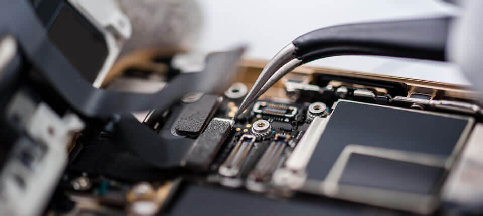
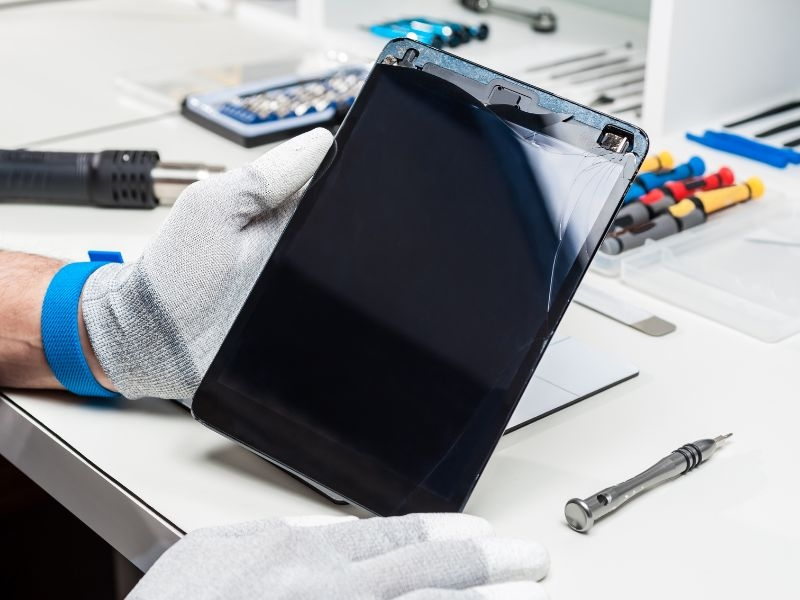

Assistência em notebooks

Notebooks estão cada vez mais em uso no mundo corporativo. A maioria das empresas opta por usá-los, pois são mais flexíveis se comparados aos desktops. Com o crescimento do home office, as empresas estão investindo cada vez mais na dinamicidade deste tipo de computador.
Por serem mais versáteis (e mais frágeis) que os desktops, os notebooks precisam de cuidados preventivos e de manutenção de épocas em épocas. Por isso, é importante que se programe periodicamente sua manutenção tais como back up de arquivos, limpeza preventiva e verificação de temperatura.
Assistência em Smartphones
Sabemos que acidentes acontecem, mas não se preocupe se seu smartphone quebrou, temos asolução para você, um laboratório completo e de ponta e tecnicos qualificados especializados, faça seu orçamento conosco
A vantagem da assistência técnica de smartphones é que ela pode garantir a sua segurança. Problemas técnicos em celulares, como baterias inchadas ou superaquecimento, podem representar um risco para a sua segurança. Com uma assistência técnica qualificada, esses problemas podem ser identificados e resolvidos antes que causem danos.
Assistência em Tablets
A assistência de tablets é um serviço que visa fornecer suporte técnico e soluções para problemas relacionados a tablets. Isso inclui desde a resolução de questões de software, como atualizações do sistema operacional e remoção de malware, até o comando de hardware, como substituição de tela quebrada ou reparo de componentes internos.
Além disso, os serviços de atendimento de tablets podem incluir a recuperação de dados, configuração de redes sem fio, instalação de aplicativos e orientação sobre o uso adequado do dispositivo. A assistência de tablets desempenha um papel importante na manutenção e prolongamento da vida útil dos dispositivos, garantindo que os usuários possam desfrutar de uma experiência satisfatória e sem continuidade.
Acessorios

Os acessórios para celulares e tablets são itens complementares móveis que oferecem funcionalidade e conveniência aos dispositivos. Eles incluem capas protetoras, películas de proteção, fones de ouvido, carregadores sem fio, suportes veiculares e canetas stylus, entre outros.
Esses acessórios desempenham um papel importante ao fornecer proteção contra danos, melhorar a experiência de áudio, facilitar o carregamento, permitir a visualização em veículos e oferecer maior precisão ao usar a tela sensível ao toque. Eles são projetados para personalizar e adaptar os celulares e tablets às necessidades e preferências individuais, tornando o uso desses dispositivos mais conveniente, seguro e agradável.